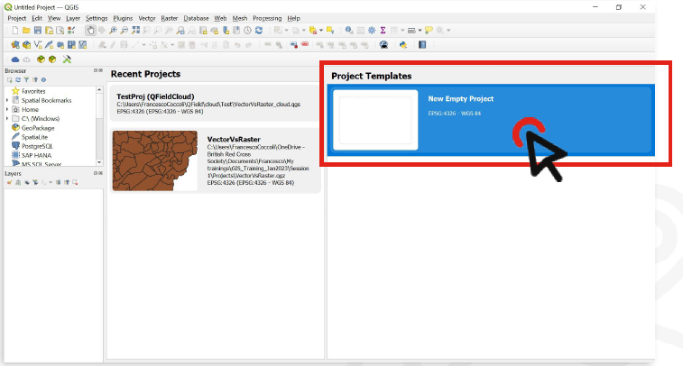

Exercise 1: Understanding the QGIS Interface#
Aim of the exercise#
QGIS is a complex program with lots of functions, and the interface can be confusing, especially for beginners. This exercise will get you familiar with the main toolbars, windows and panels in QGIS. You will create a new QGIS project and save it, and navigate through the different panels and toolbars.
The exercise covers:
Saving and loading a QGIS project
Finding and using different toolbars
Finding and using different panels
Moving panels around
Activating new panels
Data preparation#
In this exercise, we will not be using any geodata. Instead, we will be learning how to navigate through the different interfaces and how to save and load a QGIS project. You can download the zipped template folder structure here.

Standard folder structure. Source: HeiGIT#
Tasks#
Create a new project. When opening QGIS, you will be greeted by the start layout, which shows the QGIS interface with no project loaded. On the left will be a panel with recent projects (this will probably be empty). To the right will be a news panel, showing posts from the QGIS blog, and beneath this is a
Project Templatespanel.
{kind=link}

In the
Project Templatespanel, Double click on theNew Empty Projectoption (it should be the only template visible). You will see a blank canvas in the main interface since there is no data loaded yet.
Get to know the QGIS interface: Above the canvas, you will find the toolbar with a lot of different functions. To the left and right of the canvas you will find the panels. In QGIS, you will mostly access tools by finding them in the toolbars or panels.
Toolbars are at the top of the screen by default. They include the controls that let you switch between different ways of interacting with the interface.
Panels are at the sides of the screen by default. They include the file browser and layer navigation panels to the left of the screen. Other panels can be toggled to search and use processing tools. In the layer panel, you will see the data we will add later on. On the right of the screen, you will most likely have the Processing Toolbox panel. If it is missing for you, check out this wiki page.

QGIS User Interface. Source:#
You can undock panels from their location by clicking and dragging the panel title. You can either dock it to another panel (it will appear as another tab), or turn it into its own window. You can also resize the panels. Try this by moving the Layer panel to the right (Wiki Video).
Tip
In QGIS, the interface may appear slightly different depending on your screen resolution. Occasionally, certain elements may be hidden due to default rendering settings. If you encounter this, try resizing the panels and exploring the various options and functions they provide. This can help ensure that all essential tools and features are easily accessible during your workflow.
QGIS has other panels you can use that aren’t shown by default. Let’s see how we can find and activate the other panels and toolbars.
In the
Viewmenu, find thepanelsandtoolbaroptions. Hovering over each will show a list of the available panels and toolbars, and which are activated. Give yourself a minute to look through the different toolbars and panels. There are lots of options but don’t worry, you won’t use most of them in this training. The panels we’ll use the most are:Browser
Layers
Layer Styling
Processing Toolbox
Now, let’s take a look at the toolbars. The toolbars we’ll use the most are:
Attributes Toolbar
Digitizing Toolbar
Map Navigation Toolbar
Project Toolbar
Selection Toolbar
Take time to make yourself familiar with the different ways you can arrange the QGIS interface. Knowing where to find the different functions can save you a lot of time and frustration in the future!
Let’s save the project now. Click on the save icon on the toolbar or open the
Projectmenu and chooseSave As...Choose a location for the project file. An ideal place would be in the project subfolder in the template folder structure. Navigate to the folder called
Module_1_Exercise_1and open the subfolder calledProject. Select this location and give the QGIS project a name (for example:QGIS_Training_Exercise_1). The project will be saved as a.qqzfile.Click
SaveClose the QGIS application and reopen it.
Close the QGIS application and reopen it. When QGIS restarts, the project we just saved will appear in the
Recent Projectspanel. You can double-click it to open it. You can also navigate to the.qgzfile in your file explorer and double click on it. This will also launch QGIS and load the project.
Tip
Keeping your folder structure organised goes a long way in helping you work efficiently and without frustration.
Warning
Remember: Project files in QGIS are saved separately from the data you are using in the project, which is why it is advisable to keep all the files related to a project in a folder.